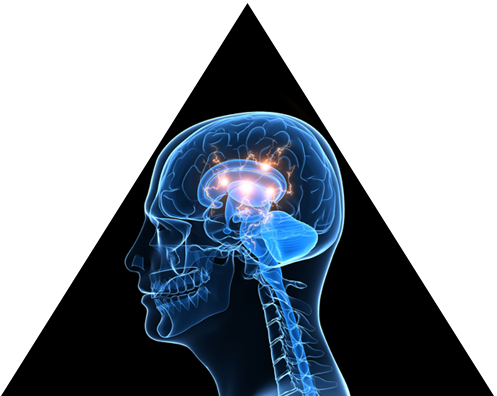

Message To User

Imagine that you have a problem and you are working with an acupuncturist, nutritionist, naturopath, a homeopath and a chiropractor, to uncover your health issues. Imagine you had these healthcare professionals in one room. Imagine that they were all working on you to get you better and all understood what each other did! Wouldn’t you feel you were well taken care of if you had access to getting the best of all these natural healthcare fields?This is what it is like to be under the care of an Applied Kinesiologist. Applied Kinesiology (“AK”) is a technique based on Traditional oriental Medicine in which every muscle in the body is related to an organ, gland or energy pathway called an acupuncture meridian.Applied kinesiology is a unique method of looking at the body that includes testing muscles to determine imbalance in the body. The muscles that are determined to be weak can give a clear picture of why there is pain and dysfunction in the body. By fixing the muscles the body communicates better and is better able to heal its self. This technique draws from disciplines of osteopathy, chiropractic manipulation, cranial sacral therapy, acupuncture, myofacial therapy, and al nutrition and more. Through Adjustments and other modalities, the nervous system is affected in a profound way. With Kinesiology information can be found as to what technique is best to be administered at each moment and in what manner.
It Allows the body to express its needs.
It prioritizes care for a patient.
It Gives the doctor an organized system of investigation for diagnosis and logical system of therapeutics.
It Points out the need for the patient to take responsibility and gives the doctor a method of evaluating progress.
Sometimes nutrition of with specific vitamins and minerals are required because of soil depletion, processed foods, and years of neglect we impose on our bodies.
Prolonged stress can cause imbalances in the body’s inflammation process, digestion, immune function and hormonal regulation. These are biochemical irregularities that most Americans with heath challenges suffer from.
Another aspect of biochemistry causing health challenges is toxicity, poising and infections. Through a proper medical history of the patient, blood test interpretation, functional testing and using applied kinesiology as a diagnostic tool, the doctor can target each individual’s weakest link in order to correct their biochemical dysfunction.
There is no doubt that society as a whole has emotional challenges. We see this in individuals and in groups of people. Recent scientific evidence shows that emotional dysfunction can be the result of physiologic (biochemical) dysfunction. Blood sugar imbalances, allergies and toxicity can result in conditions like depression, hyperkinesis and anxiety.
Structural imbalances can also cause nervous system dysfunction, which may result in confusion, learning disabilities, irritability and even schizophrenia..
THE TRIANGLE OF HEALTHY LIVING
Health problems can be classified as coming from three different areas. These are structural, chemical, and mental. If you look at a triangle each side represents the three areas in our body that can cause disease or problems. All health problems, functional or pathological, are involved with one part or all parts of the triangle. This is not new to chiropractors. Structural problems are the base of the triangle. AK enables the doctor to evaluate the triangle’s functional balance and direct therapy toward the imbalanced side or sides. The two sides of the triangle are chemical and mental. The Doctor, who is aware of the triad of health, and uses this to evaluate every patient, is miles ahead in finding the basic underlying cause of a patient’s health problem.

Applied Kinesiology techniques are developed and facilitated by an International College of Applied Kinesiology Board of Standards. These skills are cultivated from many fields including, Osteopathy, Medicine, Dentistry, Chiropractic, Acupuncture, Biochemistry, Psychology, Homeopathy, and Naturopathic medicine.
As mentioned above, the three basic factors responsible for optimum health are structure, biochemistry and emotions. These factors contribute to a triangle called “the triad of health”. If one side of the triangle becomes deficient, poor health is the result. Dr. Brian utilizes Applied Kinesiology to evaluate the way your body functions. By carefully observing the sides of this triangle the whole person can be treated and the cause of disease can be identified.
Structure: In the world of modern medicine, many are trying to use the chemical side (pharmaceutical drugs) and the emotional side to get people well. These aspects are significant, but the structural elements of the body need to function correctly in order to achieve balance. It is understandable that someone may need structural corrections if they hurt their back or develop a shoulder or foot injury. Structural problems in the spine, extremities can contribute to Biochemical dysfunction. Conditions like hypertension, indigestion, allergies, anemia, migraines, and hormonal imbalances can be caused by structural imbalances. Structural integrity is also essential for emotional well-being. Structural imbalances can cause irritation and nervous system dysfunction which may lead to attention deficit disorder, depression, learning disabilities, increased stress, headaches, and many other disorders.
Chemical: Mainstream medicine focuses on the idea that biochemical dysfunction is the cause of all disease in the body. Although People usually do not have an aspirin, Prozac or Viagra deficiency, pharmaceutical drugs are needed at times. The body has great ability to correct dysfunction in the body by just eating right. This many times is the answer, but we do not all digest, absorb and utilize the food we eat properly. Applied Kinesiology takes a special interest in making sure that our digestive functions are working so that we may benefit from a sound diet. Specific vitamins and minerals at times are required because of soil depletion, processed foods, and years of neglect we impose on our bodies. Stress can cause imbalances in our body’s digestion, immune function, hormonal regulation, and inflammation process. Toxicity chemicals are another aspect of our biochemistry that causes health challenges. Infections are also another area of stress on our bodies. The Applied Kinesiologist uses history taking, blood test interpretation, and functional tests to determine each individual person’s weakest link in order to correct a biochemical deficiency.
Mental : Emotional challenges are no doubt a part of our society. Research shows that emotional dysfunction can be the result of (biochemical) dysfunction. Blood sugar problems, allergies and toxicity can result in depression, hyperactivity and anxiety.
Are You Ready To Start Kinesiology?
We are always ready to welcome you in our center!